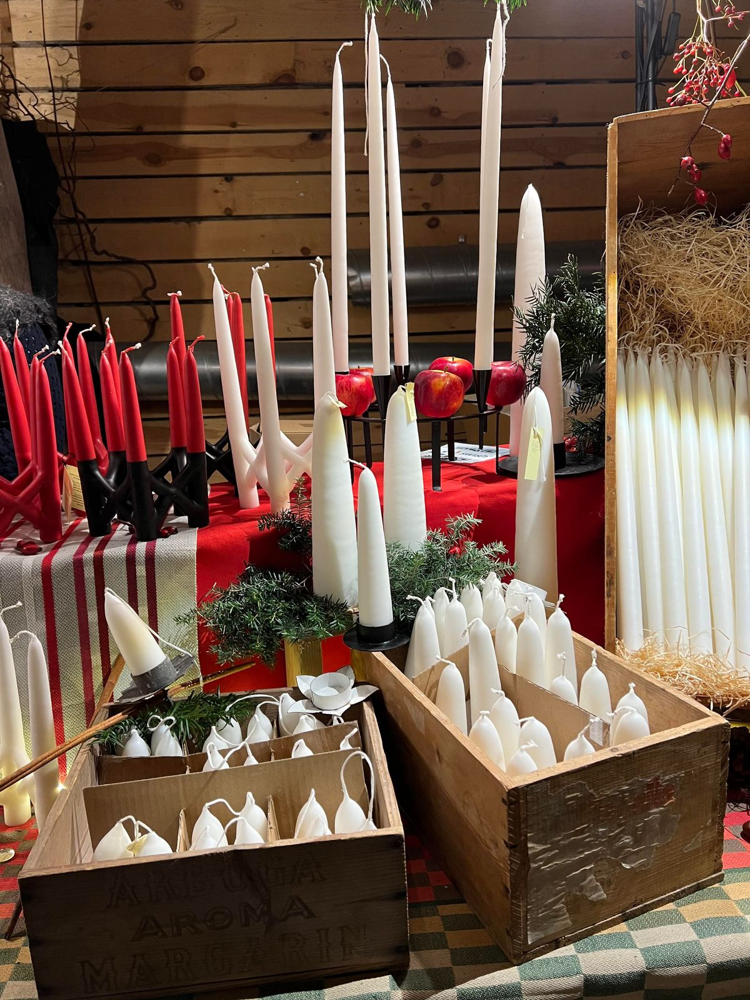
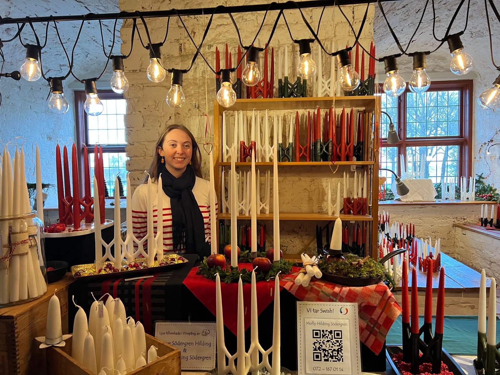
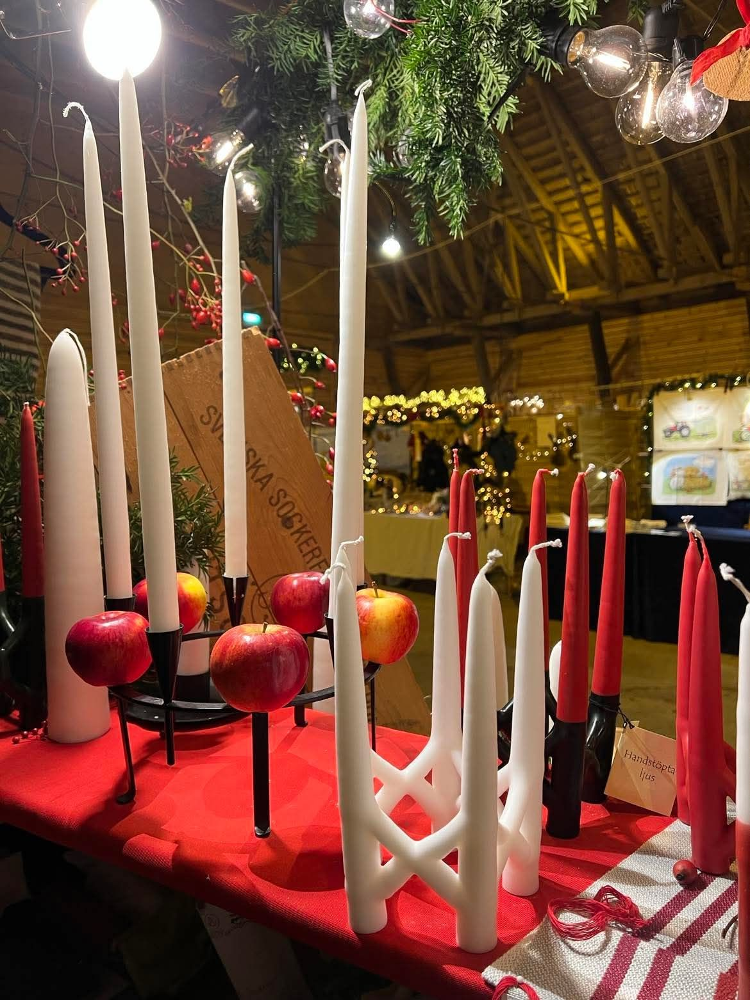

Vår hantverk
Varje ljus börjar med en låga
Vi doppar varje ljus för hand, lager på lager, tills formen blir precis rätt. Sexor i sax, kronor, spiror och sockertoppar — inget ljus är det andra likt.

Levande ljus
Ett varmare hem, en flämtande låga
Det finns något stilla över ett tänt ljus. Det samlar rummet, mjukar upp kvällen och gör vardagen till en liten fest. Våra ljus brinner rent och länge.

Från vår hand
Traditionellt hantverk, tidlös form
Vi håller kvar vid det gamla sättet att doppa ljus — tålamod, värme och en känsla för detaljer. Resultatet är ljus som är lika vackra släckta som tända.

Låt det brinna hos dig
Hitta ditt ljus
Utforska hela katalogen av handgjorda ljus — sexa sax, kronor, spiror, sockertoppar och snöbollar.